main. CI verifies those changes. Docker converts approved source code
into a reproducible artifact. The container registry stores and distributes versioned artifacts
that can later be delivered consistently to staging and production.
Developer
│
▼
feature branch ──► commit + push ──► Pull Request
│
▼
┌──────────────────────────────┐
│ GitHub Actions — CI (ci.yml) │
│ · Unit tests (pytest) │
│ · Docker build validation │ (no image push)
└──────────────────────────────┘
│ green + review
▼
Squash merge ──► main
│
▼
Semantic version tag vX.Y.Z
│
▼
┌───────────────────────────────────────┐
│ GitHub Actions — Release (release.yml)│
│ · pytest · GHCR login │
│ · docker build · derive version │
│ · push X.Y.Z / latest / <sha> │
└───────────────────────────────────────┘
│
▼
ghcr.io/mahad1090/student-ml-api
├── 1.0.0 ├── 1.1.0 └── latest| Part | Requirement | Status | Evidence |
|---|---|---|---|
| 1 | Flask/FastAPI app with /health + /predict | Done | §3, Fig 14 |
| 2 | ≥ 4 automated tests, pytest green | Done | §3, Fig 1 |
| 3 | Feature-branch workflow, meaningful commits | Done | §4, Fig 3, 17 |
| 4 | Professional PR description + checklist | Done | §4, Fig 2, 18 |
| 5 | CI on PR: checkout → Python → deps → tests → docker build | Done | §5, Fig 6, 19 |
| 6 | Deliberate test failure + fix, evidence captured | Done | §6, Fig 5, 6, 3 |
| 7 | Branch protection on main, documented | Done | §7, Fig 7 |
| 8 | Merge PR (strategy stated + justified) | Done — Squash | §8, Fig 4 |
| 9 | Production Dockerfile + .dockerignore | Done | §9 |
| 10 | Local build student-ml-api:1.0.0, run, verify | Done | §10, Fig 12–14 |
| 11 | images / ps / logs / inspect / exec; identify IDs | Done | §10, Fig 15 |
| 12 | Container registry (GHCR) | Done | §11, Fig 8 |
| 13 | Git tag v1.0.0 after merge | Done | §12, Fig 17 |
| 14–15 | Tag-triggered release workflow, version derived from tag | Done | §12, Fig 10, 11 |
| 16 | Registry contains 1.0.0, 1.1.0, latest; digest recorded | Done | §11, Fig 8, 9, 21 |
| 17 | Delete local image, pull from registry, run | Done | §13, Fig 16 |
| 18–19 | v1.1.0 via full PR workflow, released | Done | §14, Fig 18–20, 11 |
| 20 | Rollback to 1.0.0 from registry, no rebuild | Done | §15, Fig 21, 23 |
| 21 | Full traceability chain for 1.1.0 | Done | §16 |
| 22 | CI vs Release separation + rationale | Done | §17 |
| 23 | OCI labels on image | Done | §17, Fig 15 |
| 24 | Commit-SHA image tag | Done | §17, Fig 8 |
| 25 | Docker build-cache analysis | Done | §17 |
| 26 | ≥ 2 failures reproduced & diagnosed | Done — 3 | §18, Fig 5, 25 |
The service is a FastAPI application (app.py). The prediction "model" simply
doubles the input — the exercise targets the MLOps workflow, not model quality.
| Endpoint | Request | Response (v1.0.0) |
|---|---|---|
GET /health | — | {"status":"healthy","application":"student-ml-api","version":"1.0.0"} |
POST /predict | {"value":10} | {"input":10,"prediction":20} |
The application version is read from the VERSION file at runtime, so it is never hard-coded
in code. Pydantic StrictInt | StrictFloat validation makes a non-numeric value return
HTTP 422 rather than being silently coerced.
tests/test_app.py (4 tests)test_health_endpoint — status, application name, versiontest_predict_success — {"value":10} → {"input":10,"prediction":20}test_predict_missing_input — empty body → 422test_predict_invalid_input — {"value":"not-a-number"} → 422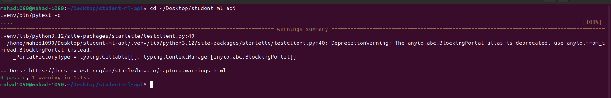
pytest -q → 4 passed.Direct development on main was never performed. All code reached main through
three Pull Requests:
| PR | Branch | Title | Merge commit |
|---|---|---|---|
| #1 | feature/prediction-api | feat: prediction API with CI pipeline | fa0394b |
| #2 | feature/model-metadata | feat: report application and model version on /health | 02dc3db |
| #3 | docs/mlops-workflow-writeup | docs: MLOps workflow write-up, traceability and failure analysis | 4650a2b |
Commits follow Conventional-Commits style: feat:, test:, ci:,
fix:, docs:, chore:. Each PR body contains
Summary · Changes · Testing Performed · Docker Impact · Checklist
(rendered from .github/pull_request_template.md).
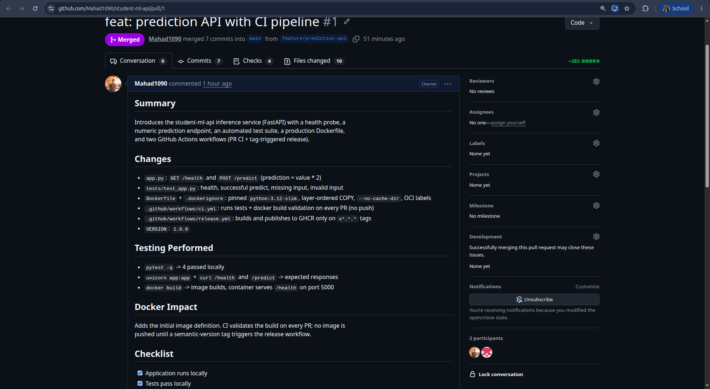
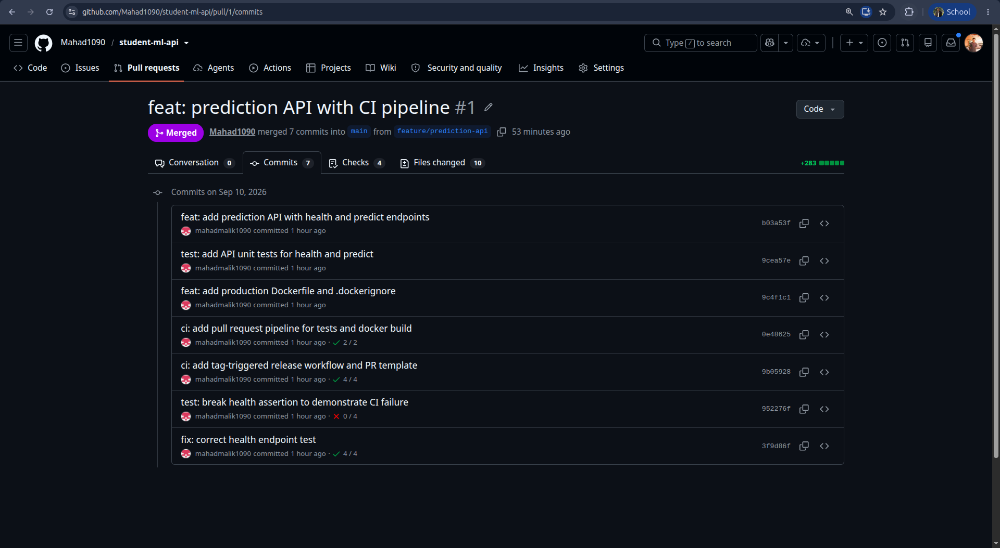
.github/workflows/ci.yml runs on pull_request → main and on pushes to feature
branches. It publishes no artifact.
job: test → checkout → setup-python 3.12 → pip install -r requirements.txt → pytest -q
job: docker-build → needs: test → checkout → docker build (validation only, no push)Because docker-build declares needs: test, a failing pytest
short-circuits the pipeline (the build job is skipped) and the whole run is FAILED.
A failing docker build likewise fails the run. Branch protection then makes that a hard merge gate.
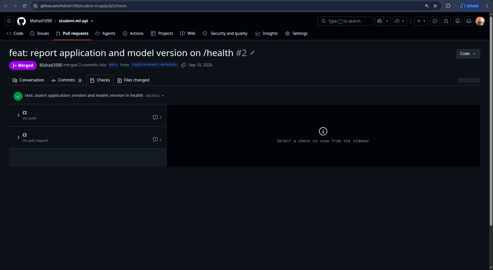
Unit tests, Docker build validation) on a PR.| Detail | |
|---|---|
| Symptom | PR #1 CI turned red. Unit tests failed; Docker build validation was skipped; PR banner "Merging is blocked". |
| Root cause | Commit 952276f changed test_health_endpoint to assert data["status"] == "wrong", but the endpoint returns "healthy". |
| Evidence | Actions run 34494638490 — E AssertionError: assert 'healthy' == 'wrong' → FAILED tests/test_app.py::test_health_endpoint (Fig 5). |
| Correction | Commit 3f9d86f "fix: correct health endpoint test" restored == "healthy". Re-run 34494921761 passed both checks; merge unblocked (Fig 6). |
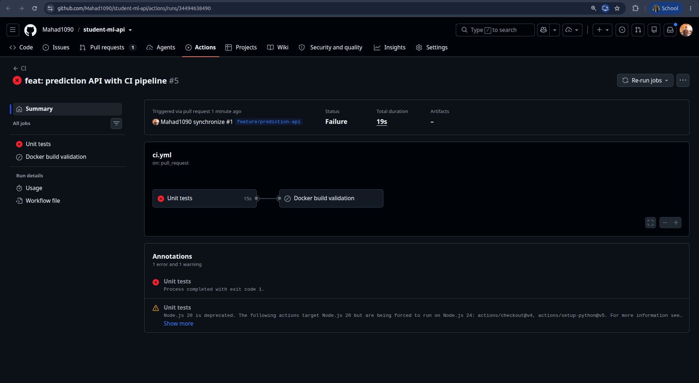
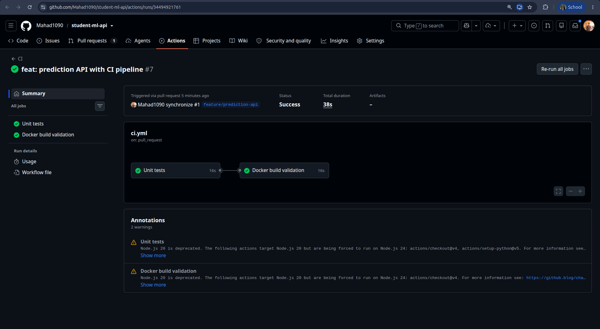
Configured on main. Settings selected and their rationale:
| Setting | Value | Why |
|---|---|---|
| Require a pull request before merging | On | No direct commits to main; every change is reviewed and CI-checked. |
| Require approvals | 1 | Forces a second reviewer in a team context. |
| Dismiss stale approvals on new commits | On | An approval must reflect the code that actually merges. |
| Require status checks to pass | On — Unit tests, Docker build validation | Only a green pipeline can merge. |
| Require branches up to date before merging | On | Checks run against the real post-merge state. |
| Require conversation resolution | On | No unresolved review threads slip through. |
| Allow force pushes / deletions | Off | main history cannot be rewritten or the branch deleted. |
| Enforce for administrators | Off (solo repo) | GitHub forbids approving one's own PR; in a team this is On and a colleague approves. The PR + passing-CI gate still applies. |
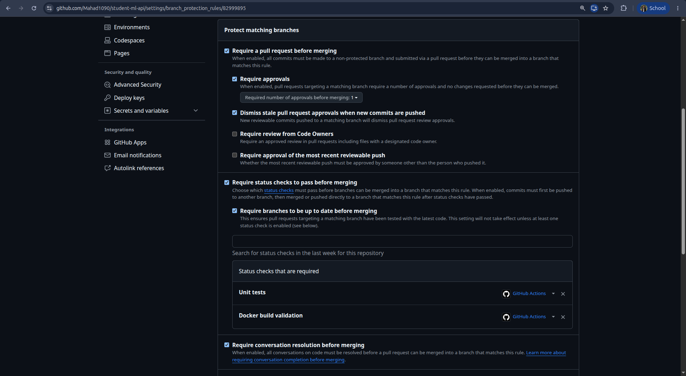
main.Squash and merge was used for every PR.
main.main stays linear and every commit is independently buildable, keeping git bisect meaningful.(#1), (#2)) — main → PR is one hop — while the full commit-by-commit history remains on the PR.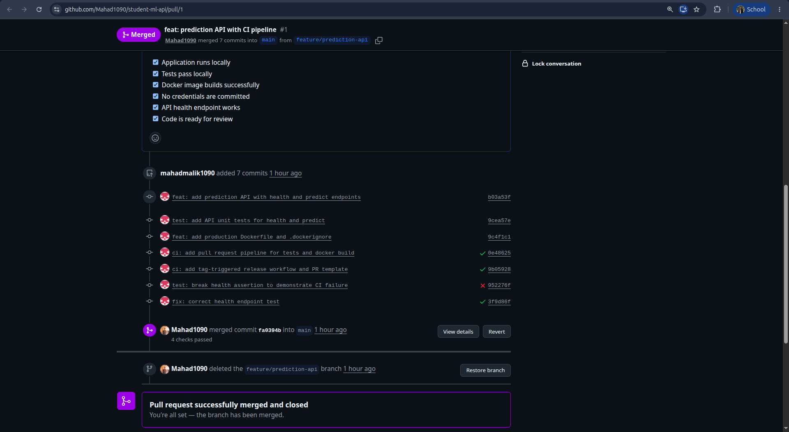
fa0394b; checklist complete; branch auto-deleted.FROM python:3.12-slim # pinned — never python:latest
ARG APP_VERSION / GIT_COMMIT / BUILD_DATE
LABEL org.opencontainers.image.* # OCI metadata (Part 23)
WORKDIR /app
COPY requirements.txt . # deps copied first …
RUN pip install --no-cache-dir -r requirements.txt # … so this layer caches
COPY app.py VERSION ./ # app code last
EXPOSE 5000
CMD ["uvicorn","app:app","--host","0.0.0.0","--port","5000"].dockerignore excludes .git, .github, __pycache__,
*.pyc, .venv, .env, tests, *.md, the
assignment PDF, etc. Good practices demonstrated: explicit base-image version, WORKDIR,
dependency-before-code COPY ordering, --no-cache-dir, EXPOSE, and an exec-form
CMD that binds 0.0.0.0 (not 127.0.0.1) so the port is reachable from the host.
docker build -t student-ml-api:1.0.0 \
--build-arg APP_VERSION=1.0.0 \
--build-arg GIT_COMMIT=$(git rev-parse HEAD) \
--build-arg BUILD_DATE=$(date -u +%Y-%m-%dT%H:%M:%SZ) .
docker run -d --name student-ml-api -p 5005:5000 student-ml-api:1.0.0
curl http://localhost:5005/health → {"status":"healthy","application":"student-ml-api","version":"1.0.0"}| Identifier (Part 11) | Value |
|---|---|
| Container ID | cd0c8599377d |
| Image ID | b9bab104a906 (sha256:b9bab104a906…) |
| Exposed port | 5000/tcp |
| Running command | uvicorn app:app --host 0.0.0.0 --port 5000 |
| Application working directory | /app |
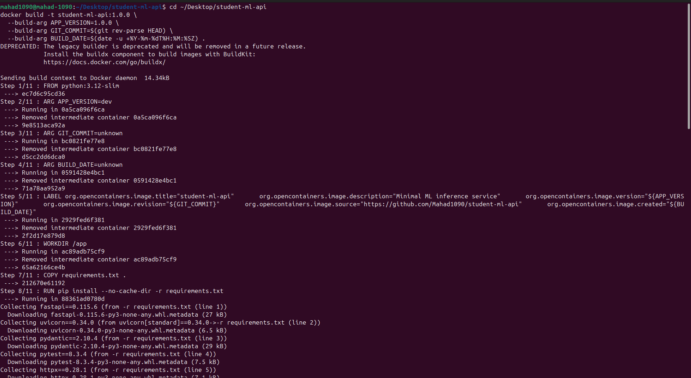
docker build steps 1–8.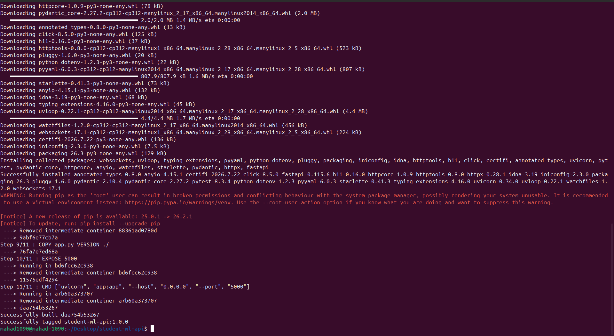
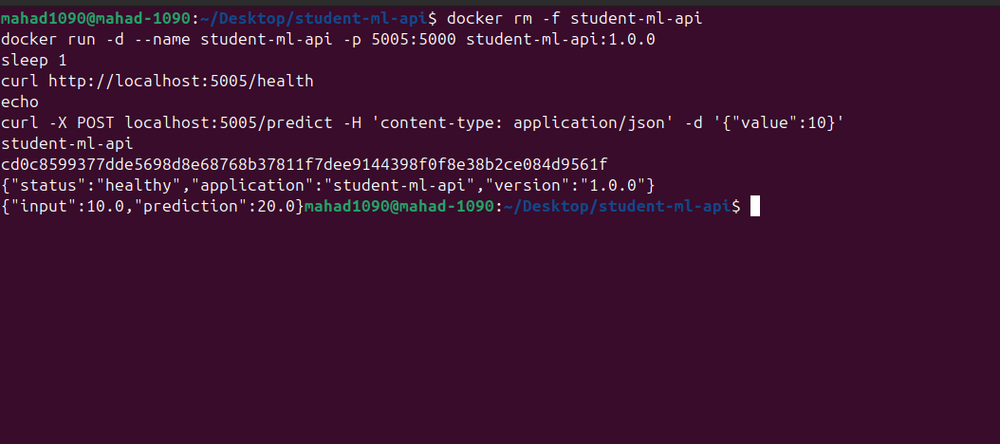
/health & /predict verified.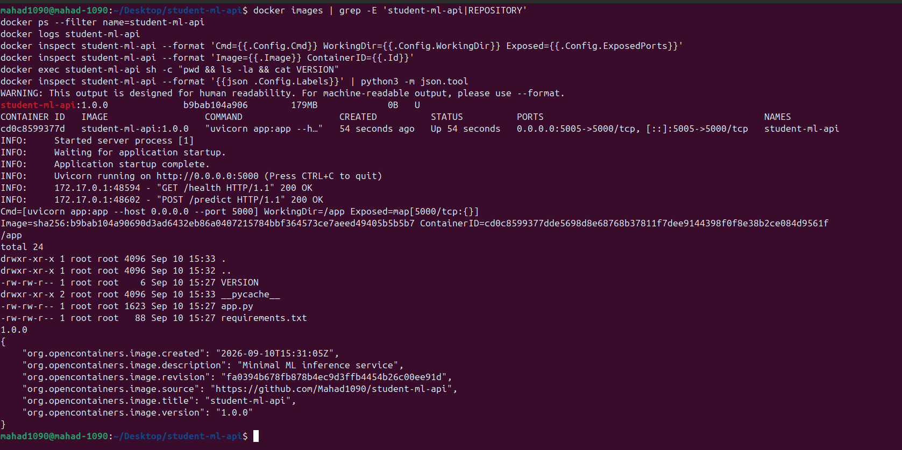
images / ps / logs / inspect / exec + OCI labels (revision = fa0394b678…).Registry: GitHub Container Registry (GHCR) — ghcr.io/mahad1090/student-ml-api, package visibility Public, linked to the repository.
| Tag | Digest | Points to |
|---|---|---|
1.0.0, fa0394b | sha256:10000c57bd3adc45a796199743b8b52e858b54d996ca34433f208c6b7b778e4c | commit fa0394b |
1.1.0, latest, 02dc3db | sha256:2c9ccbd13d38ad9e8fbb4a067825f32b2c39b09082b31e4372f03332baadcaf5 | commit 02dc3db |
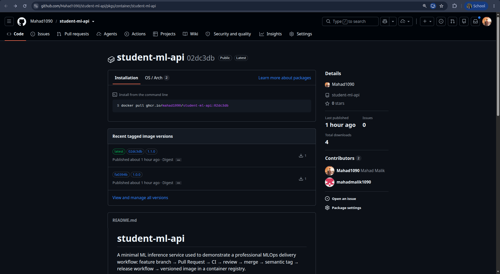
latest, 1.1.0, 1.0.0 + commit-SHA tags.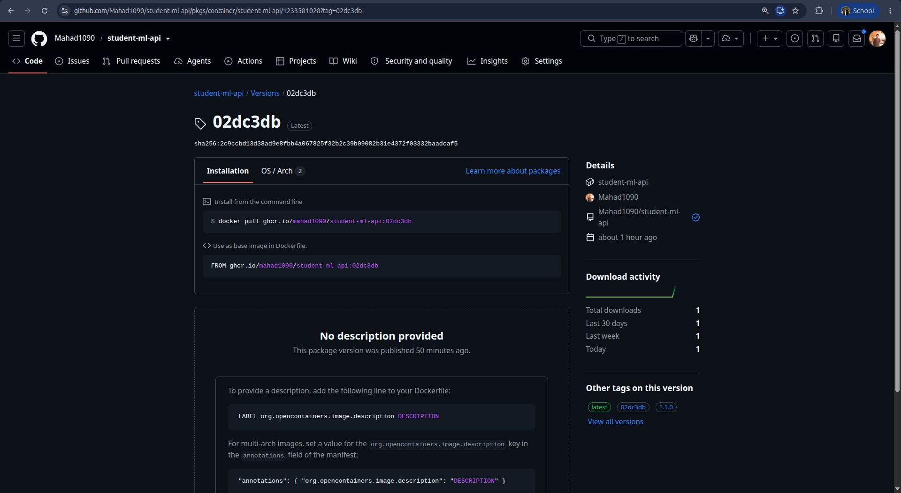
1.1.0 / latest digest sha256:2c9ccbd1….After each merge: git checkout main && git pull && git tag vX.Y.Z && git push origin vX.Y.Z.
Tags present: v1.0.0 → fa0394b, v1.1.0 → 02dc3db.
.github/workflows/release.yml runs only on push: tags: ["v*.*.*"] and performs:
checkout → derive version from tag → run pytest → GHCR login (GITHUB_TOKEN)
→ docker buildx build → tag X.Y.Z / latest / <short-sha> → pushThe version is derived automatically — version=${GITHUB_REF_NAME#v} turns
v1.1.0 into 1.1.0. Nothing is hard-coded; no password is stored in YAML
(the GitHub-managed GITHUB_TOKEN with packages: write is used).
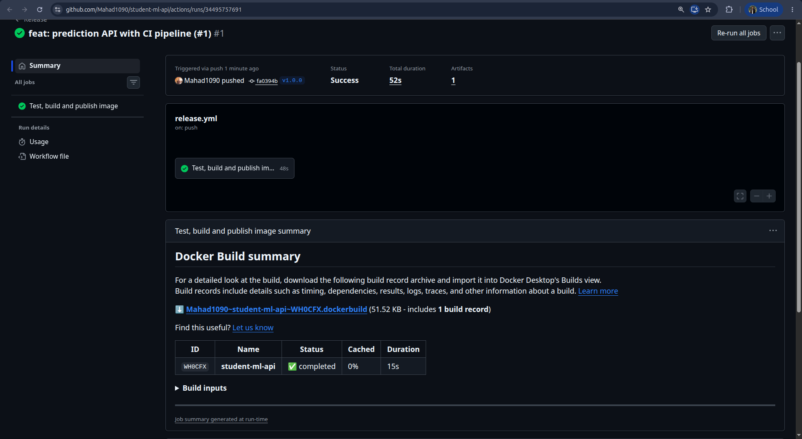
v1.0.0 (success).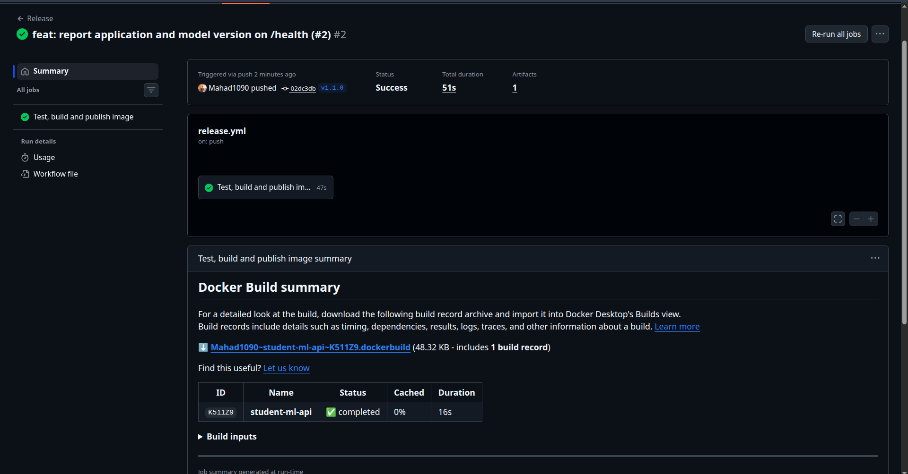
v1.1.0 (success).docker rmi student-ml-api:1.0.0 # delete local build
docker pull ghcr.io/mahad1090/student-ml-api:1.0.0 # fetch from registry
→ Digest: sha256:10000c57bd3adc45a796199743b8b52e858b54d996ca34433f208c6b7b778e4c
docker run -d --name student-ml-api -p 5005:5000 ghcr.io/mahad1090/student-ml-api:1.0.0
curl localhost:5005/health → {"status":"healthy",...,"version":"1.0.0"}The image ran on a different toolchain state without rebuilding — build machine → registry → runtime environment.
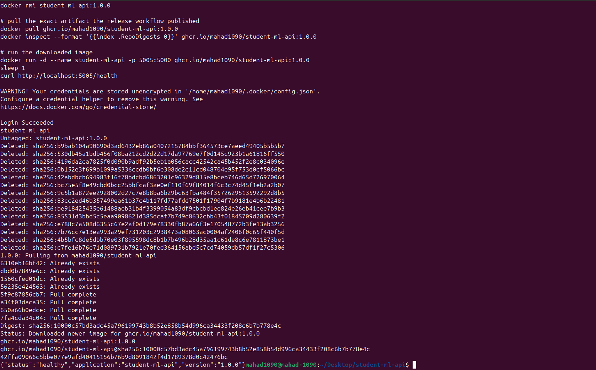
Branch feature/model-metadata. /health was extended to report the application
and model versions independently, and VERSION bumped to 1.1.0:
{"status":"healthy","application":"student-ml-api","application_version":"1.1.0","model_version":"model-1"}Tests updated to assert both new fields. The full workflow was repeated
(branch → commits → push → PR #2 → CI → merge → tag v1.1.0 → release). The PR workflow was not bypassed.
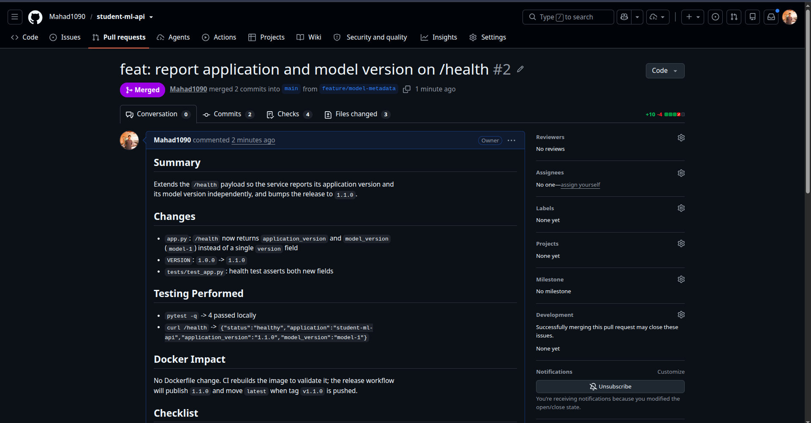
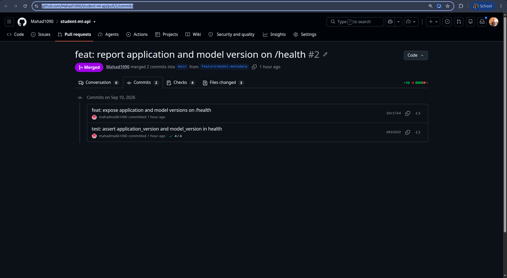
feat + test).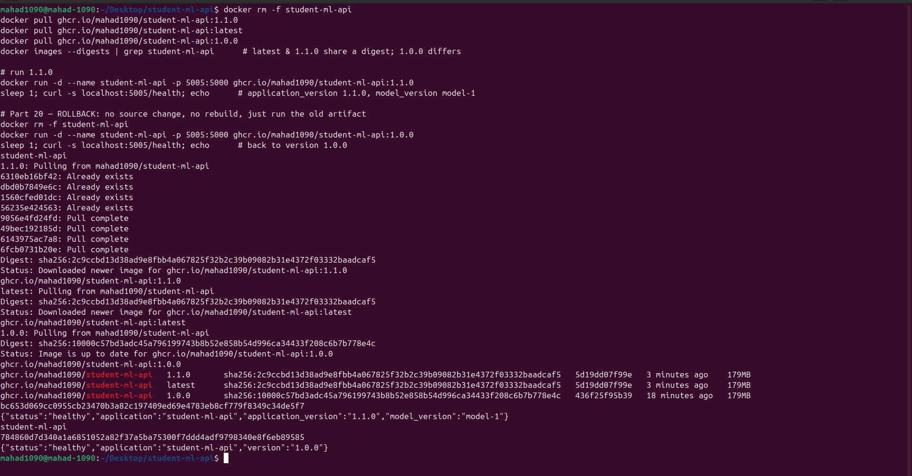
docker images --digests: latest and 1.1.0 share digest 2c9ccbd1…; 1.0.0 keeps digest 10000c57… and remains available.Assume 1.1.0 has a production issue. Restore 1.0.0 with no source change and no rebuild:
docker rm -f student-ml-api
docker run -d --name student-ml-api -p 5005:5000 ghcr.io/mahad1090/student-ml-api:1.0.0
curl localhost:5005/health → {"status":"healthy","application":"student-ml-api","version":"1.0.0"}Why this beats git clone → pip install → python app.py: the 1.0.0
image is the exact bytes that were tested and previously ran — same OS packages, same pinned
Python, same wheels. A fresh pip install can resolve different transitive versions and
reintroduce bugs. Rollback is one docker run (seconds, no build toolchain on the host) and
is auditable by digest.
Pull Request : #1 feat: prediction API with CI pipeline
Merge Commit : fa0394b678fb878b4ec9d3ffb4454b26c00ee91d
Git Tag : v1.0.0
Docker Image : ghcr.io/mahad1090/student-ml-api:1.0.0 (also :fa0394b)
Image Digest : sha256:10000c57bd3adc45a796199743b8b52e858b54d996ca34433f208c6b7b778e4cPull Request : #2 feat: report application and model version on /health
Merge Commit : 02dc3db8bf199a185b6f0c9d0c454fb599e25e12
Git Tag : v1.1.0
Docker Image : ghcr.io/mahad1090/student-ml-api:1.1.0 (also :latest, :02dc3db)
Image Digest : sha256:2c9ccbd13d38ad9e8fbb4a067825f32b2c39b09082b31e4372f03332baadcaf5The image additionally carries the commit as an OCI label
(org.opencontainers.image.revision), so a running container can always be traced to its
source commit (Fig 15).
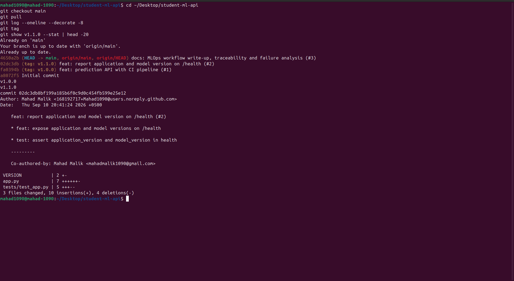
git log --decorate + git tag: tags on main, PR-merge commits.CI — ci.yml | Release — release.yml | |
|---|---|---|
| Trigger | pull_request → main, feature-branch push | push tag v*.*.* |
| Does | test, validate, build-check | test, build, version, publish |
| Publishes artifact | No | Yes |
Why not publish an image from every PR? A PR is unreviewed and possibly unstable (or from a fork); publishing pollutes the registry with throwaway tags and risks deploying an un-merged change. Registry storage/bandwidth cost money and most PR builds are never used. Publishing should be a deliberate, tagged, auditable event — and a push credential is far more dangerous in a PR-triggered job than in a tag-triggered one only maintainers can fire.
org.opencontainers.image.title = student-ml-api
org.opencontainers.image.version = 1.1.0
org.opencontainers.image.revision = 02dc3db8bf199a185b6f0c9d0c454fb599e25e12
org.opencontainers.image.source = https://github.com/Mahad1090/student-ml-api
org.opencontainers.image.created = <build timestamp>Verified with docker inspect --format '{{json .Config.Labels}}' (Fig 15).
Alongside 1.1.0 and latest, the release publishes student-ml-api:02dc3db.
Benefit: a semantic tag is a human label that could be re-pushed and latest
moves constantly; a commit-SHA tag is 1:1 with an immutable point in source history — given a running
container you can name the exact commit, and given a commit you can pull exactly that image.
With COPY requirements.txt → RUN pip install → COPY app.py:
editing only app.py reuses the cached dependency layer (---> Using cache)
and rebuilds in seconds; editing requirements.txt invalidates that layer and
everything after it, so pip install re-runs. COPY . . before
pip install is worse because any one-character source change forces a full re-install on
every build — wasting CI minutes on every commit.
pytest blocks the PR| Symptom | PR #1 CI red; Unit tests failed, Docker build validation skipped; merge blocked. |
| Root cause | Assertion changed to == "wrong" while the endpoint returns "healthy". |
| Evidence | Run 34494638490: AssertionError: assert 'healthy' == 'wrong' (Fig 5). |
| Correction | Restored the assertion; commit 3f9d86f; run 34494921761 green (Fig 6). |
| Symptom | On branch chore/failure-demo, CI Unit tests failed during collection; Docker build validation skipped. |
| Root cause | httpx removed from requirements.txt. FastAPI's TestClient wraps httpx, so every test fails to import even though app.py still runs. |
| Evidence | Run 34498295688: ModuleNotFoundError: No module named 'httpx' / RuntimeError: The starlette.testclient module requires the httpx package (Fig 25). |
| Correction | Restored httpx==0.28.1; branch discarded (never merged). A runtime-only missing dep (e.g. dropping uvicorn) would instead pass pytest but fail the container's CMD at start — which is why CI also builds the image. |
| Symptom | docker run -p 5000:5000 → Bind for 0.0.0.0:5000 failed: port is already allocated. curl localhost:5000/health returned a different app's JSON. |
| Root cause | Three containers from an unrelated exercise already published host ports 5000–5002; the new container could not bind and the port that answered belonged to another service. |
| Evidence | docker ps showed 0.0.0.0:5000->5000/tcp on competent_rhodes, …5001 / …5002 on staging-a/-b; our container stuck in Created. |
| Correction | Published on a free host port: -p 5005:5000. curl localhost:5005/health then returned the correct student-ml-api payload. The container port (EXPOSE 5000, --port 5000) is fixed by the image; only the host side of -p host:container collided. |
Related — binding to 127.0.0.1: if the app bound 127.0.0.1 instead
of 0.0.0.0, it would only accept connections from inside the container's namespace, so
-p 5005:5000 forwarding from the host would get connection reset. This is why the
CMD uses --host 0.0.0.0.
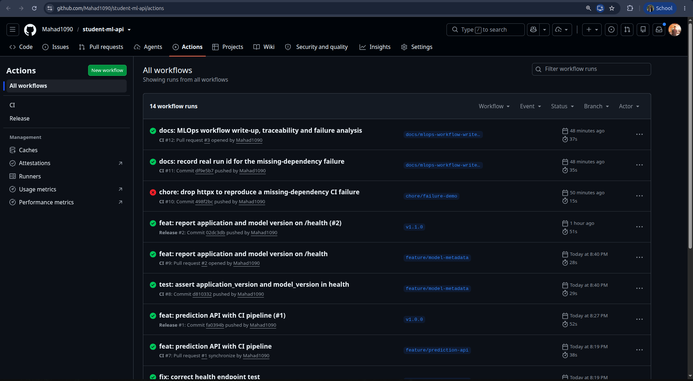
chore/failure-demo and Part-6 runs among the green CI / Release runs.main? No review, no CI gate, no audit trail — a bad commit is instantly "production". PRs make every change reviewed, tested and revertible as a unit.main always green. A failure caught after merge means everyone pulls broken code and the fix needs its own PR.latest insufficient? It is a moving pointer — different bytes over time, recorded nowhere; two machines pulling it a day apart can run different code.<short-sha> image tag, or docker inspect → org.opencontainers.image.revision label.docker run ghcr.io/mahad1090/student-ml-api:1.0.0 — the old image is still in the registry; no code change, no rebuild.v1.1.0) marks a commit in source history and triggers the release; the Docker tag (1.1.0) labels the resulting image in the registry. The workflow derives the second from the first.application_version + model_version) — the same code with a different model, or the same model behind different code, are different systems. It also multiplies the test matrix and complicates rollback (roll back code, model, or both?).All evidence images, in order. (Figures are also referenced inline above.)
pytest -q: 4 passed.fa0394b).main branch protection.1.1.0/latest.v1.0.0.v1.1.0.docker build (steps 1–8).docker build (steps 9–11, tagged).git log / git tag on main.latest=1.1.0, 1.0.0 still present + rollback curls.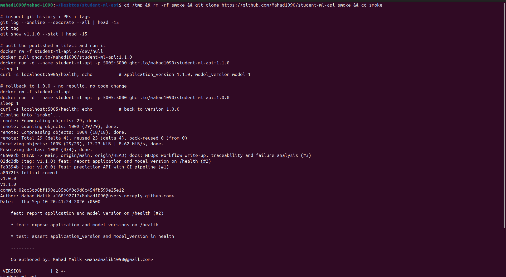
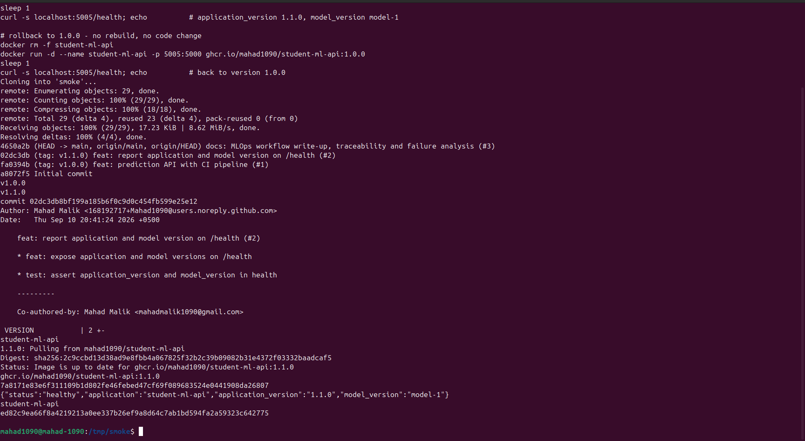
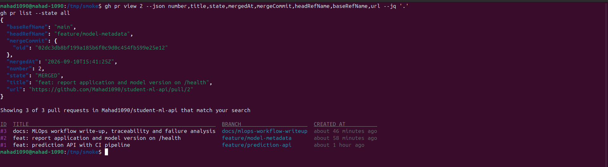
gh pr view / gh pr list).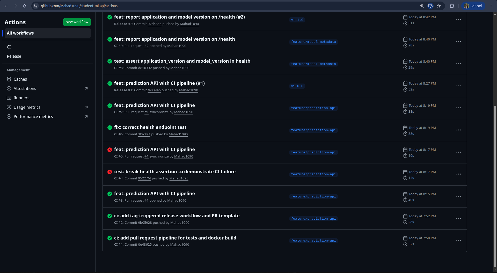